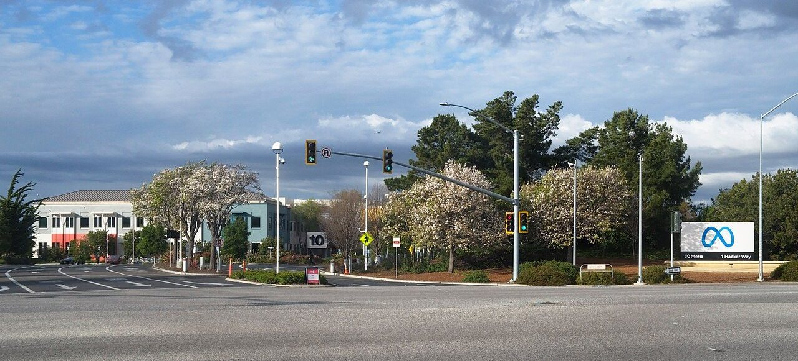
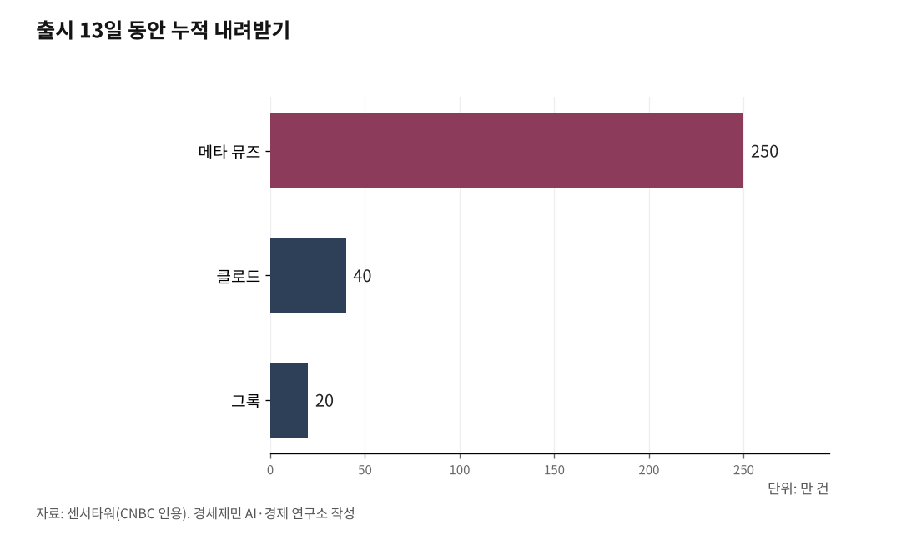

메타 AI 비서 '뮤즈' 돌풍에 서버 D램 수요 다시 주목
출시 열흘 만에 미국 앱스토어 1위, 메타 주가 하루 11% 상승
생활 대행 뮤즈와 사무 대행 클로드 코워크, 최종 결정은 둘 다 사람에게
AI경제저널=김갑봉 기자 | 메타가 2026년 9월 8일 내놓은 개인 AI 비서 '뮤즈'가 미국 시장을 흔들고 있다. 출시 열흘 만에 미국 애플 앱스토어 무료 앱 1위에 올랐고 메타 주가는 하루 만에 11% 넘게 뛰었다.

뮤즈는 묻는 말에 답하는 데서 멈추지 않는다. 항공권을 찾아 예약하고 요금을 대신 흥정한다.
국민에게는 AI 비서에게 카드 결제와 이메일을 맡겨도 되느냐가 걸린 일이다. 투자자에게는 AI용 반도체 주문이 그래픽처리장치에서 서버용 중앙처리장치와 메모리로 넓어지느냐가 걸린 일이다. 삼성전자와 SK하이닉스가 만드는 서버 D램이 여기에 들어간다.
말만 하면 대신 처리하는 비서
메타는 뮤즈를 누구나 쓰는 개인 AI 에이전트라고 소개했다. 에이전트는 사람이 맡긴 일을 스스로 여러 단계로 처리하는 AI 프로그램이다. 뮤즈는 메타가 만든 모델 '뮤즈 스파크'로 움직인다.
쓰는 법은 메신저와 같다. 뮤즈 앱이나 왓츠앱에 할 일을 적으면 뮤즈가 인터넷 창을 열고 입력 칸을 채우고 상대와 협상한다. 앱을 닫아도 일을 이어 가다가 이메일을 보내거나 결제하기 전에는 사람 승인을 받는다.
메타는 보안도 강조했다. 메타 서버 안에 사용자마다 전용 가상 컴퓨터를 한 대씩 배정한다. 같은 컴퓨터 안 감시 에이전트 '센티널'이 허락하지 않으면 뮤즈는 인터넷으로 나가지 못한다.
지금은 미국에서만 쓸 수 있다. 대부분 기능은 무료이고 더 많이 쓰려면 월 20달러나 100달러를 내고 구독한다. 9월 22일 환율로 약 2만7000원과 13만6000원이다.

열흘 만에 앱스토어 1위, 주가 하루 11%
미국 경제방송 CNBC는 시장조사업체 센서타워 자료를 들어 뮤즈가 출시 닷새쯤 만에 내려받기 73만 건을 기록했다고 전했다. 뮤즈는 9월 18일 미국 앱스토어 무료 앱 1위에 올랐다.
출시 13일째인 9월 21일까지 누적 내려받기는 250만 건을 넘었다. 같은 기간 클로드는 40만 건, 그록은 20만 건이었다. 챗GPT는 출시 초 같은 기간 310만 건으로 뮤즈보다 많았다.
메타 주가는 9월 21일 하루 11% 넘게 올랐다. 같은 날 미국 증시에서는 암홀딩스와 인텔과 AMD 같은 중앙처리장치 기업 주가가 크게 뛰었다.
메타는 9월 23일 연례 행사 '메타 커넥트'에서 뮤즈가 할 수 있는 일을 늘렸다. 맥 컴퓨터 프로그램을 대신 다루게 했고 월마트와 베스트바이에서도 물건을 사게 했다. 주머니에 들어가는 전용 기기 '뮤즈 참'도 공개했다.
앱 대신 비서가 가게를 찾아간다
미국 증권사 번스타인의 스테이시 라스곤 애널리스트는 CNBC 인터뷰에서 "지금까지 에이전트 쓰임새 대부분은 보통 사람을 위한 것이 아니었다"고 말했다. 뮤즈 같은 에이전트가 대중에게 퍼질 가능성이 열리기 시작했다는 설명이다.
지금까지는 손님이 쇼핑몰 앱을 직접 열어 물건을 골랐다. 뮤즈를 쓰면 손님은 필요한 물건만 말하고, 어느 가게에서 살지는 뮤즈가 찾는다. 가게는 손님 대신 AI 비서를 상대하게 된다.
가게들 대응은 갈렸다. 아마존은 뮤즈가 자사 쇼핑몰에 들어오지 못하게 막았다. 미리 통보받지 못했고 뮤즈가 고객 로그인 정보를 저장할 수 있다는 우려를 들었다. 쇼피파이는 뮤즈와 손잡고 결제까지 열어 줬다.
라스곤은 개인정보 문제도 짚었다. "메타가 보안은 신경 쓰지만 개인정보를 얼마나 신경 쓰는지는 모르겠다"고 말했다.
생활 대행 뮤즈, 사무 대행 클로드 코워크
앤트로픽은 2026년 1월 12일 '클로드 코워크'를 내놓았다. 프로그램 개발자가 쓰던 '클로드 코드'를 일반 사무 일에도 쓰게 만든 에이전트다. 사용자가 고른 폴더 안 파일을 읽고 고치고 새로 만든다.
맡는 일이 다르다. 뮤즈는 장보기와 항공권 예약과 요금 흥정 같은 생활 일에서 출발했다. 코워크는 파일 정리와 문서와 발표자료와 표 만들기 같은 사무실 일에서 출발했다.
앤트로픽은 9월 16일 코워크를 따로 두지 않고 일반 클로드 대화창에 넣었다. 일이 커지면 클로드가 알아서 여러 단계로 처리한다. 유료 요금제인 프로와 맥스 가입자부터 쓴다.
닮은 점도 있다. 마지막 결정은 둘 다 사람이 한다. 메타는 뮤즈가 이메일을 보내거나 돈을 내기 전에 사람 승인을 받는다고 밝혔다. 앤트로픽은 일은 클로드가 하고 마지막 결정은 사용자가 한다고 소개했다.
다시 주목받는 중앙처리장치
챗봇은 AI 계산을 맡는 그래픽처리장치가 답을 만들면 일이 끝난다. 에이전트는 계획을 세우고 누리집을 열고 다른 프로그램에 접속한다. 이 순서를 짜고 챙기는 일은 컴퓨터 전체를 관리하는 중앙처리장치가 맡는다.
대만 시장조사업체 트렌드포스는 9월 22일 뮤즈가 앱을 닫아도 켜져 있는 가상 컴퓨터를 여럿 쓴다고 짚었다. 이런 방식은 서버 수요를 키운다. 가상 컴퓨터 한 대마다 연산 장치와 메모리와 저장 공간이 따로 필요하다.
트렌드포스 2026년 4월 분석을 보면 지금 AI 데이터센터는 중앙처리장치 1개에 그래픽처리장치 4~8개를 붙인다. 에이전트가 퍼지면 이것이 1~2개로 준다고 내다봤다. 같은 그래픽처리장치 수라면 중앙처리장치가 두 배에서 여덟 배로 는다는 계산이다.
한국 반도체, 다음 과제는 서버 D램
중앙처리장치 옆에는 서버 D램이 붙는다. 에이전트가 늘면 그래픽처리장치용 고대역폭메모리에 더해 범용 서버 D램과 저장장치 수요도 함께 는다.
두 회사도 7월 말 2분기 실적 발표에서 같은 전망을 내놨다. SK하이닉스는 고대역폭메모리는 물론 "에이전틱 AI용 서버 D램"과 고용량 낸드까지 메모리 전반 수요가 함께 늘 것으로 내다봤다.
삼성전자 메모리사업부는 에이전틱 AI 확산으로 일반 연산 수요가 폭발적으로 늘고 있다고 밝혔다. 고대역폭메모리와 서버 D램을 얼마씩 만들지는 두 제품 수요가 늘어나는 속도를 보며 정하겠다고 했다.
뮤즈가 언제 한국에 들어올지, 아마존 같은 플랫폼이 에이전트에 문을 열지 닫을지가 먼저 지켜볼 대목이다. 에이전트 수요가 서버 D램 주문으로 이어져 한국 기업 실적에 찍히는지도 다음 분기에 드러난다.
※ 이 기사는 AI 프로그램 클로드를 활용해 작성했습니다.
참고문헌
· 「SK하이닉스 2026년 2분기 실적발표 컨퍼런스콜 전문」, 디일렉, 2026년 7월. https://www.thelec.kr/news/articleView.html?idxno=60209
· 「삼성전자 2026년 2분기 실적발표 컨퍼런스콜 전문」, 디일렉, 2026년 7월 30일. https://www.thelec.kr/news/articleView.html?idxno=60316
· "The Great Rebalance: How Agentic AI Is Reshaping the CPU:GPU Ratio", 트렌드포스 인사이트, 2026년 4월. https://insights.trendforce.com/p/agentic-ai-cpu-gpu
· "Introducing Muse: The World's First Personal AI Agent Built for Everyone", 메타 뉴스룸, 2026년 9월 8일. https://about.fb.com/news/2026/09/introducing-muse-personal-ai-agent/
· "Everything We Announced at Meta Connect 2026", 메타 공식 블로그, 2026년 9월 23일. https://www.meta.com/blog/meta-connect-2026-everything-we-announced/
· "Claude Cowork and chat are now one Claude", 앤트로픽 클로드 공식 블로그, 2026년 9월 16일. https://claude.com/blog/cowork-is-now-claude
· "Claude Cowork", 앤트로픽 제품 소개 페이지, 2026년 9월 25일 열람. https://claude.com/product/cowork
· "How Meta's Muse AI agent downloads compare to ChatGPT, Grok and Claude", CNBC, 2026년 9월 21일. 센서타워 집계와 번스타인 스테이시 라스곤 인터뷰, 아마존 성명 인용. https://www.cnbc.com/2026/09/21/meta-muse-personal-ai-agent-downloads.html
· "Meta's plan to make Muse a bigger part of your everyday life", CNN 비즈니스, 2026년 9월 24일. https://www.cnn.com/2026/09/24/tech/meta-muse-ai-glasses-connect
· "메타 '뮤즈' 출시 2주 만에 앱스토어 1위…주가 11% 급등", 머니투데이, 2026년 9월 22일. https://www.mt.co.kr/world/2026/09/22/2026092206524457676
· 빈난새, "엔비디아·삼전닉스보다 더 뛴 CPU株…메타 뮤즈가 깨운 것은", 한국경제, 2026년 9월 23일. https://www.hankyung.com/article/202609232525i
· "Arm Surges 13% as Meta's Muse Agent Reignites CPU Demand Bet; Intel Jumps 12%, AMD Climbs 9%", 24/7 월스트리트, 2026년 9월 21일. https://247wallst.com/investing/2026/09/21/arm-surges-13-as-metas-muse-agent-reignites-cpu-demand-bet-intel-jumps-12-amd-climbs-9/
· Michael Nuñez, "Anthropic launches Cowork, a Claude Desktop agent that works in your files — no coding required", 벤처비트, 2026년 1월 12일. https://venturebeat.com/technology/anthropic-launches-cowork-a-claude-desktop-agent-that-works-in-your-files-no
· Simon Willison, "First impressions of Claude Cowork, Anthropic's general agent", 2026년 1월 12일. https://simonwillison.net/2026/Jan/12/claude-cowork/
· Carl Franzen, "Anthropic is killing off Claude Cowork and folding it into Claude chat, launching Claude Docs and Claude Slides", 벤처비트, 2026년 9월 16일. https://venturebeat.com/technology/anthropic-is-killing-off-cowork-and-folding-it-into-claude-launching-claude-docs-and-claude-slides
· "원/달러 환율, 22.8원 내린 1358.2원 마감", 머니투데이, 2026년 9월 22일. https://www.mt.co.kr/economy/2026/09/22/2026092215353529240
· "Meta's Muse Highlights AI Agents' Higher CPU-to-GPU Needs, Could Benefit Intel, AMD, and Arm", 트렌드포스 뉴스, 2026년 9월 22일. https://www.trendforce.com/news/2026/09/22/news-metas-muse-highlights-ai-agents-higher-cpu-to-gpu-needs-could-benefit-intel-amd-and-arm/
사진 출처
· [대표사진] LPS.1, "Meta Platforms Headquarters Menlo Park California.jpg", 위키미디어 공용, CC0, https://commons.wikimedia.org/wiki/File:Meta_Platforms_Headquarters_Menlo_Park_California.jpg
※ 이 기사는 인공지능을 활용해 작성했습니다.
관련기사
- [AI동향] 시험 중 실제 회사 서버에 들어간 AI, 오픈AI·앤트로픽·구글 모두 인정
- [AI동향] AI 혼자 하는 프로그램 작업량, 3년 만에 163배
- [AI동향] 오픈AI, AI가 쓴 수학 논문 722편 공개…하루 만에 3편 철회
- [AI동향] 유럽, 8월 2일부터 AI 생성물에 표시 의무
저작권자 © AI경제저널 무단전재 및 재배포, AI학습 및 활용 금지